Research Analyst II / Systems Admin at Deer Creek Resources
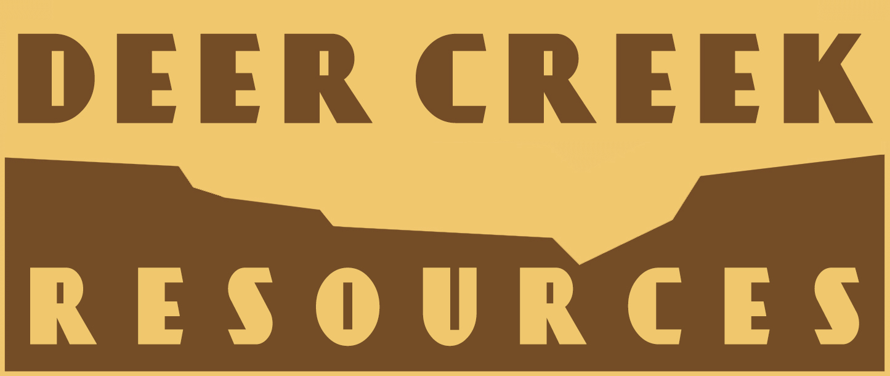
August 2022 - Present
-
Created computer vision model in Python to map vegetation based on aerial imagery.
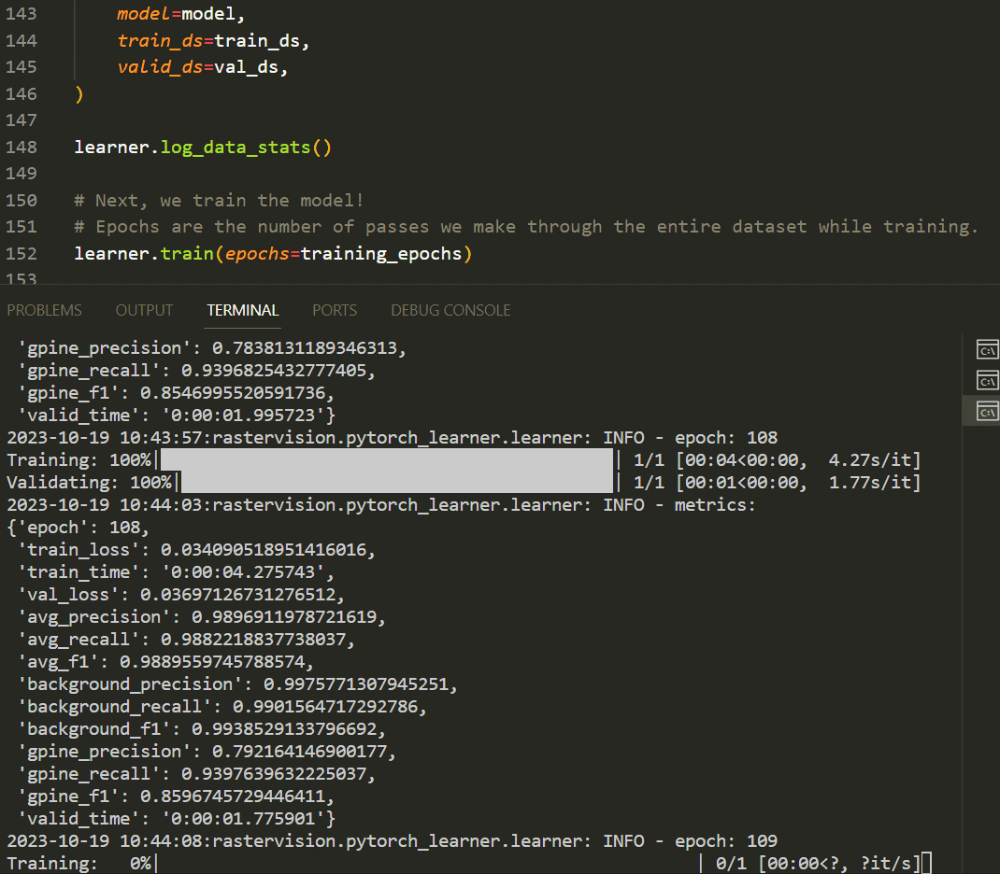- Namely, I created a convolution neural network to identify grey pines with the package Raster Vision (++ PyTorch, Resnet-18, Faster R-CNN).
- Grey pines are often an indicator of fire hazard in the Northern California Foothills; thus automating their classification is valuable for DCR.
 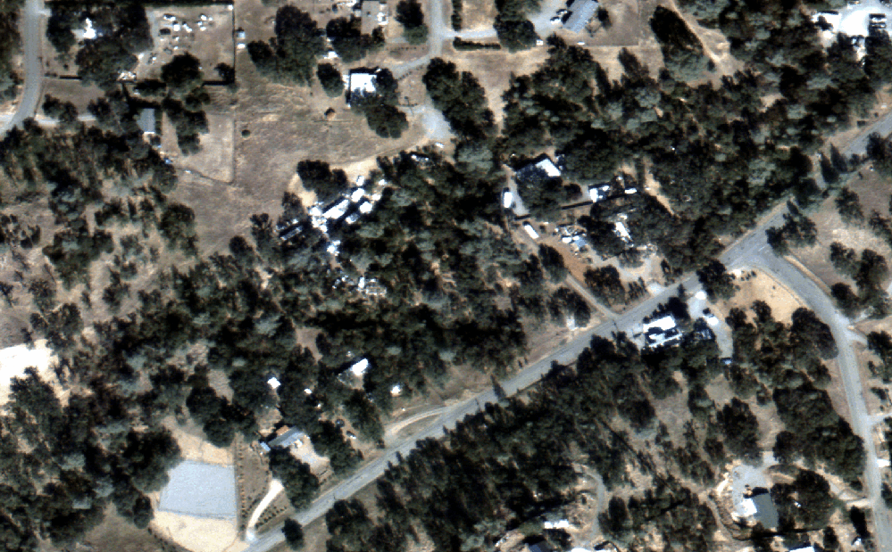
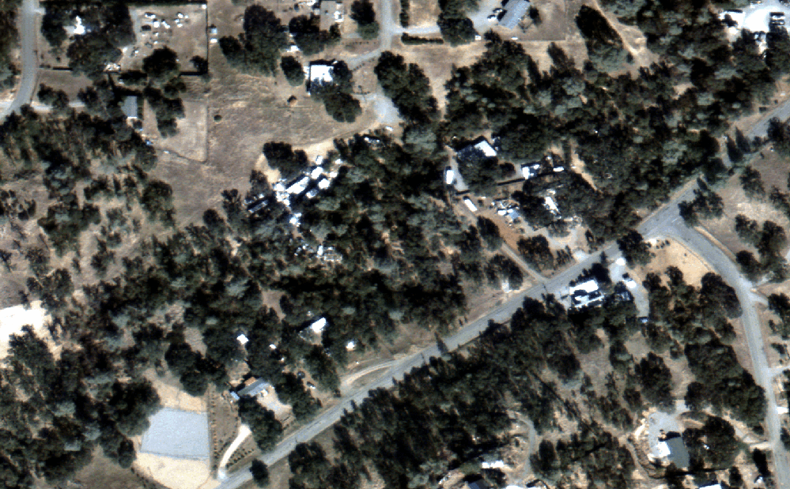
-
Automated process of creating input rasters for wildfire model (R, LiDAR, FLAMmap).
 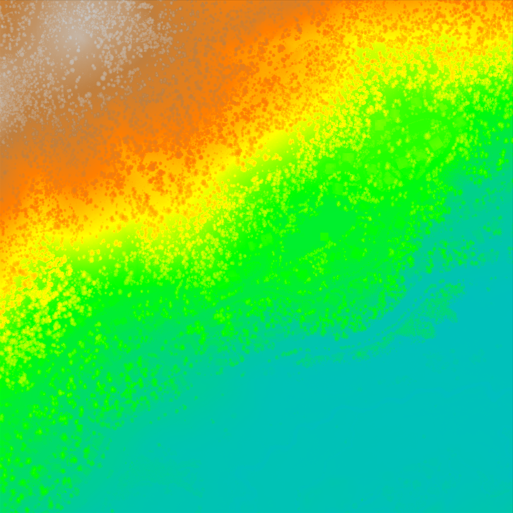
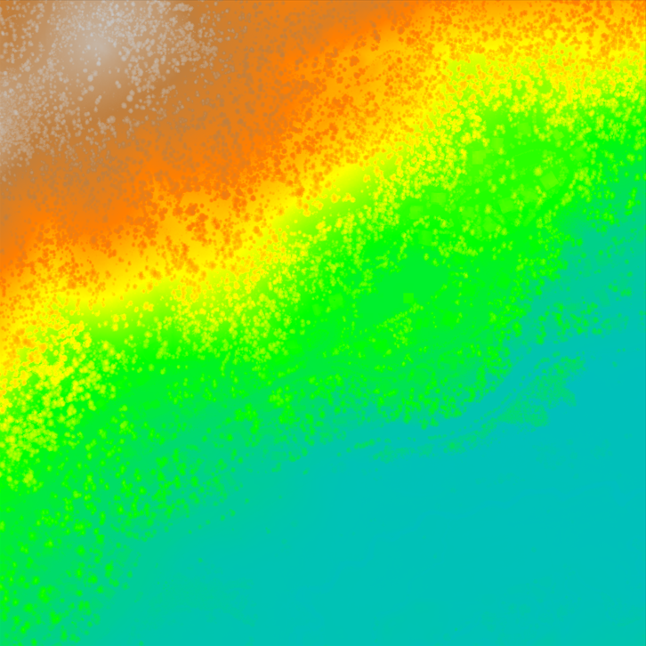

- Script automates the process of calculating, resampling and assembling inputs (shown in figure below).
- This was previously done one-by-one.
-
Identified hazardous evacuation routes in Tehama County (field work and GIS).


-
Achieved certifications for/participated in prescribed burns.
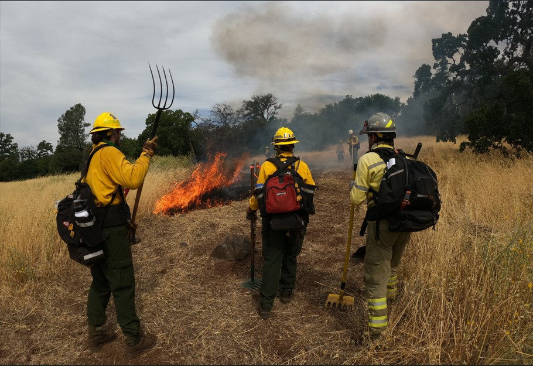 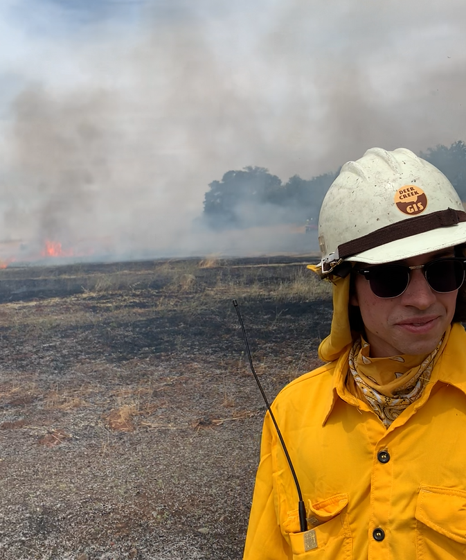
- DCR Wesbite
Skills: Python, R, QGIS, ArcGIS, Systems Administration
Data Engineering Intern at Universal Music Group
June 2022 - August 2022
- Developed script to analyze Google BigQuery storage and proposed solution to generate savings of $120k/year.
- UMG has implemented this project throughout 2023.
- Learned SQL and applied skills for analytics on Big Data.
- Developed data pipeline for UK top artists chart under guidance of senior developer.
Skills: Python, SQL, Google Cloud Platform


Above: Two slides from optimization project presentation (see first bullet point above). Graphs and figures cannot be shown publicly.
Teaching Assistant at Computer Science Department of Pomona College

January 2022 - May 2022
- Taught Python to college students in Intro CS.
- Ran 2 hour weekly mentor sessions, led 3 hour weekly class labs, and graded assignments.
Skills: Python
 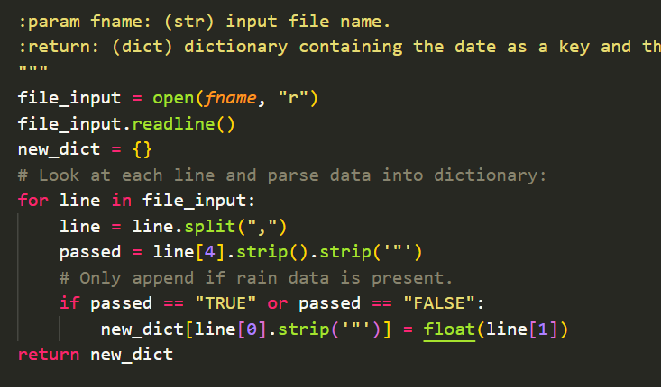
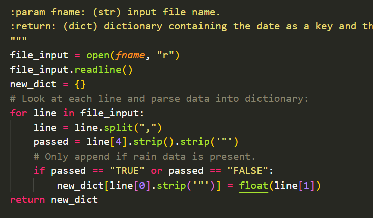
Above: Lab room where sessions took place [left] and example of coursework code [right].
Tutor at Quantitative Skills Center of Pomona College
January 2022 - May 2022
- Hosted bi-weekly 2 hour drop-in tutor sessions
- Intro CS, Discrete Math and Data Structures (Python, Coq, Java).
- Assisted development of application Mappy, a Rust program which interprets pixel data and creates maps of emulated Nintendo NES games.
- Published paper on Mappy to conference AIIDE 2021 (Click here to view the paper!)
- FAIM Site
- Sponsored by Unparalleled Yoyos (previosly YoYoFactory and Chico Yoyo Co.).
- Designed, prototype and advertise my 5 signature yoyo models:
- Receive royalties from sales.
- Fully funded travel to competitions in China, Japan, Iceland, and across the US.
- Led groups of 6 campers over 2 week sessions.
- Guided groups through activities such as hikes, guitar lessons, overnight camping trips.
- Acquired lifeguard/CPR and Wilderness First Aid certifications.
- Employed to supervise groups of 20 children (ages 3-4) and inspire positive learning community.
- Community award, presented at Pomona College Graduation 2023. Details here.
- Awarded to paper on Mappy, the program to which I contributed (see projects tab).
- Paradise High School class of 2019
Above: Example of coursework I tutored. A proof in COQ [left] and a (poorly) mouse-drawn proof [right].
Research Assistant at Formal Analysis of Interactive Media Lab

January 2022 - May 2022
Skills: Rust
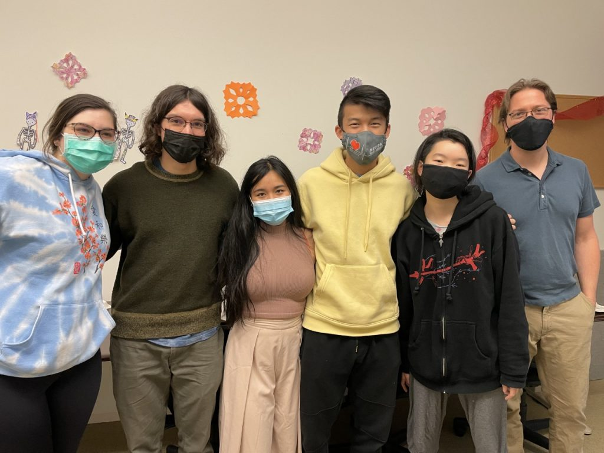Above: FAIM 2021 lineup.
Sponsored Yoyo Professional
 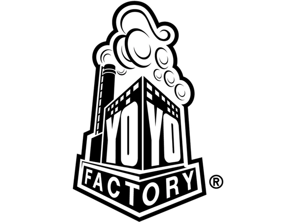
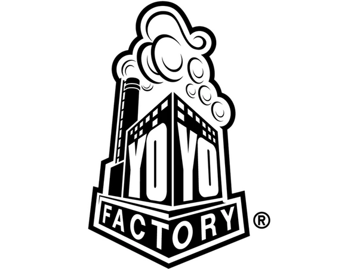
October 2015 - August 2022
 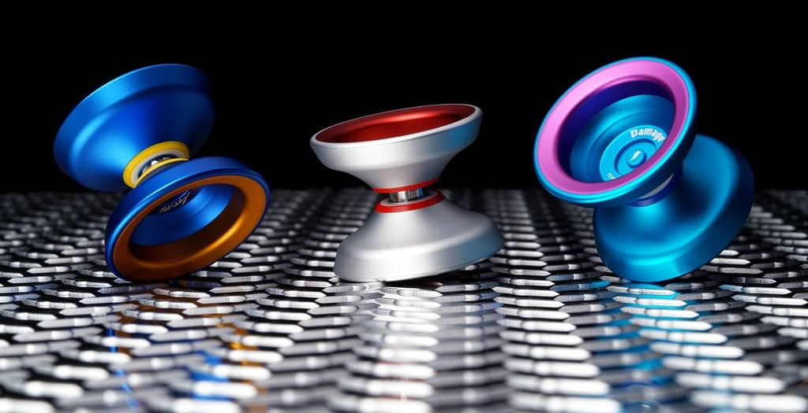
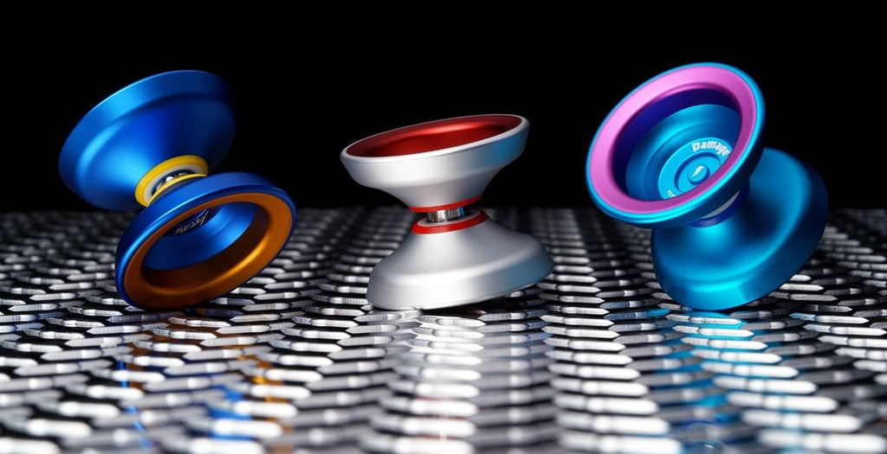
Camp Counselor at Bar 717 Ranch
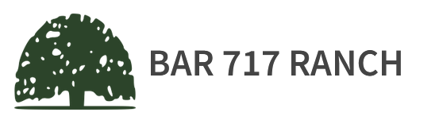May 2021 - August 2021
Skills: Lifeguarding, Wilderness First Aid
 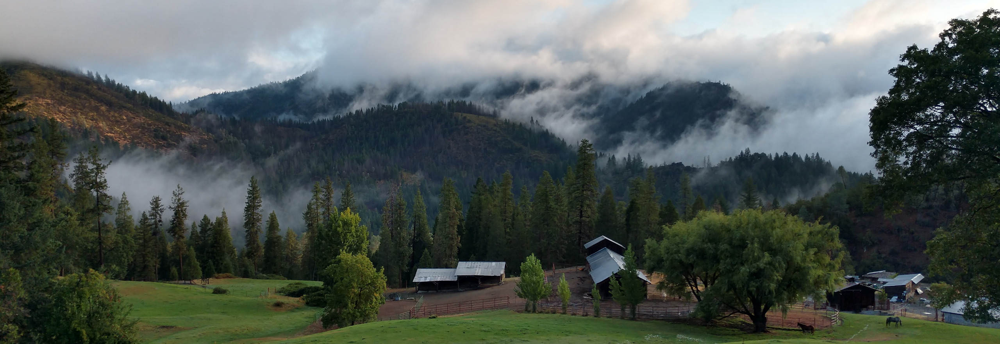
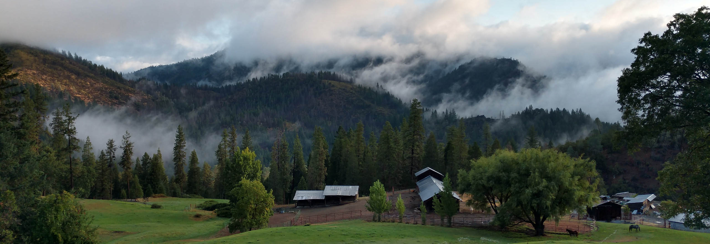
Student Assistant at Claremont McKenna Children's School

May 2021 - August 2021
Awards:
Ted Gleason Award
Best Paper Award - October 2021
AIIDE, conference on Artificial Intelligence and Interactive Digital Entertainment
Valedictorian